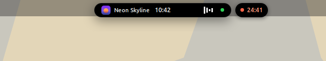
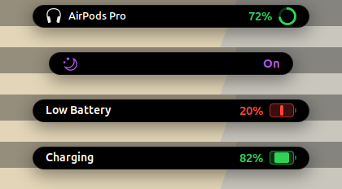

Music, timers, meetings and notifications, right at the top of your screen.
Attach it to the top edge like a MacBook notch, or float it as a pill.
Hover over it and it opens into a full hub.
In 4 minDesign syncJoinFocus24:12 leftWeather18° Clear
24:12
Idle: date, time and battery, in place of the top-bar clock
Running on a real desktop.
Every screenshot is Notchex on GNOME 46. The music, weather and meeting are demo data. Select one to see it full size.
The hub opens on Now, in frosted glass. Music, your next meeting, the timer and the weather.System monitor, one of four viewsWeather with a 3-day forecastSpotlight, results on frosted glassFocus timer with presetsControl Center look, music in the notch
Notch or pill. Your call.
Both shapes do the same things. Pick one under Appearance in preferences, or try both in the demo above.
NotchJoined to the top edge with rounded bottom corners, like a MacBook. It fills the space where the top-bar clock was.

PillA fully rounded capsule that floats a few pixels below the edge, with a gap you can set. Here the timer has moved into its own bubble while music plays.
Live activities, the size of the notch.
Small things stay small. The notch stretches sideways with a little spring, an icon slides out on the left and the status on the right, then it settles back.
Headphones connecting, with a ring that fills to their battery level
A blue Play Here button when headphones connect but sound is still on your speakers, and Reconnect when they drop off
Focus turning on or off
Low battery and charging, with the level at a glance
Meetings with a Join button, volume, brightness, notifications and track changes

Everything at the top of your screen.
The notch replaces the top-bar clock. It stays small until something happens, then grows to show it.
The notch, or a pill
Date, time and battery when idle. Album art and live equalizer bars while music plays, or a countdown while a Pomodoro runs.
Attached to the top edge as a notch, or floating as a pill
Music and a timer at once? The timer moves to a bubble beside it
A green or orange dot when the camera or microphone is in use
Scroll over it for volume, swipe sideways to skip tracks
Live activities
The notch briefly grows for things you'd want to know about:
Track changes from Spotify, YouTube, VLC and any MPRIS player
Volume, brightness and battery alerts
Bluetooth devices connecting, with their battery level
Notifications, and upcoming meetings with a Join button for Meet, Zoom and Teams
A hub in the notch
Hover and it opens on Now: what's playing, your next meeting, the timer and the weather. Four more sections hold your calendar and tasks, the focus timer, notes, and the system monitor and controls.
Magnifying Dock
A macOS-style Dock built from your GNOME favorites. Icons magnify as you move over them. Bottom, left or right; always on, auto-hiding, or hidden only when a window covers it.
Spotlight search
Press Super + Space and the notch turns into a search bar that finishes your words as you type. Results float below on frosted glass: apps, settings, files and system actions. Type 12*7+3 for a calculator.
macOS-style desktop
Frosted glass on the open notch, the top bar and its menus. A Control Center look for Quick Settings, an auto-hiding top bar, three-finger zoom and optional traffic-light window buttons. Each one can be turned off.
Use all of it, or just one part.
Every part of Notchex works on its own. Open the Features page in preferences, pick a preset, then switch single parts on or off.
Changes apply right away. No logging out.
Getting there takes one step: right-click the notch, press Super + ,, or open Notchex Settings from your apps. No Extension Manager needed. The right-click menu also switches between notch and pill.
Preset
NotchReplaces the top-bar clock with the notch and the hub
Notifications in the notchInstead of a banner
Spotlight searchSuper + Space search inside the notch
DockMagnifying Dock at the bottom, left or right
Frosted glassTranslucent top bar, menus and popups
Control Center lookQuick Settings restyled
Five sections. Opens on what's happening now.
The notch resizes to fit each view, so it never takes more room than it needs. Turn off the views you don't use.
NowMusic player, next meeting with Join, focus timer and weather cards. Plus the full Weather view: two locations and a 3-day forecast.
CalendarGoogle Calendar events and Google Tasks through GNOME Online Accounts. Add tasks from the notch.
TimerPomodoro with presets, a progress ring and cycle tracking.
NotesSticky notes saved as Markdown files.
SystemMonitor, focus stats, Controls (Wi-Fi, Bluetooth, Night Light, Focus, power) and Claude Code usage.
Keyboard first.
Every Notchex shortcut can be changed in preferences.
Input
Action
Super + N
Expand or collapse the notch
Super + Space
Open Spotlight search
Super + ,
Open Notchex settings
Right-click the notch
Settings, notch or pill, hide the notch
Tab or → in Spotlight
Accept the suggested completion
↑↓ · Tab · Enter · Esc
Move, switch category, open and close in Spotlight
Scroll over the notch
Change the volume
Swipe sideways over the notch
Next or previous track
Three-finger pinch
Zoom the screen in or out
Three-finger double-tap
Toggle zoom
Light, local and private.
Plain GJS on top of GNOME Shell. The idle notch reacts to events instead of checking for them, so it uses almost nothing until something changes.
No telemetry
Notchex only goes online for features you turn on, like weather, Google Tasks or meeting links. Access tokens stay in memory and are never written to disk.
Nearly idle at rest
The clock updates once a minute. System stats are only read while the Monitor view is on screen, and the camera and mic dot needs no polling at all. The equalizer runs in a separate process, so it can never freeze your desktop.
Clean uninstall
Notchex installs for your user only and never needs sudo. Turn off a part and it stops completely. Uninstall and it's gone.